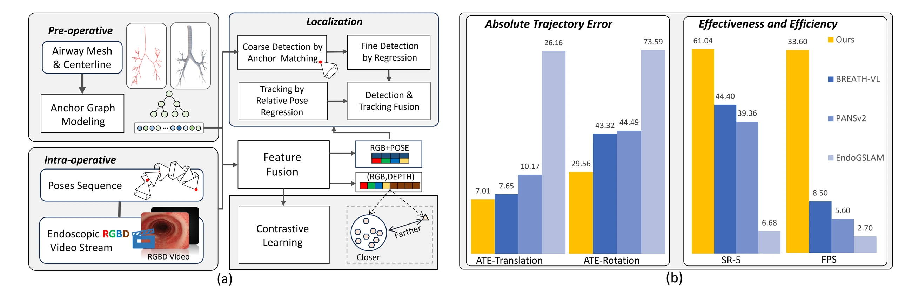
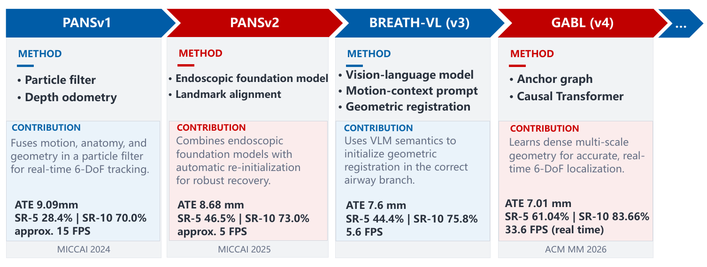
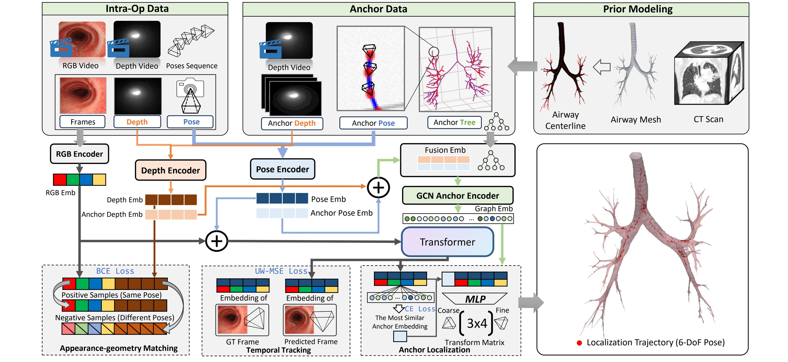
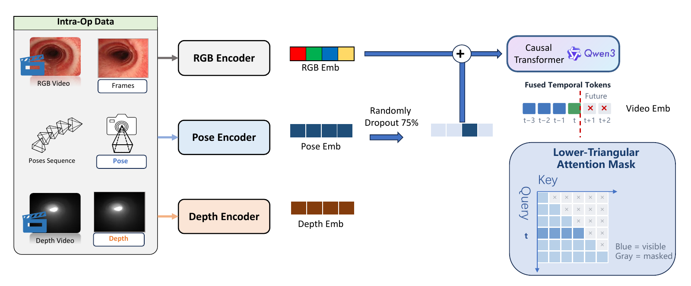
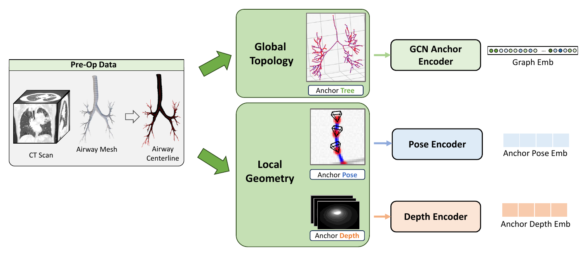
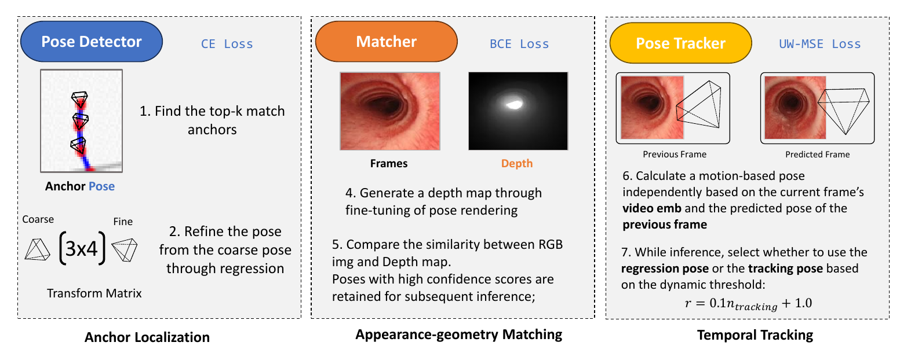
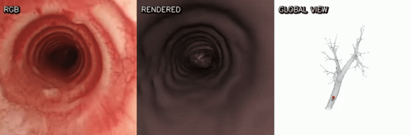
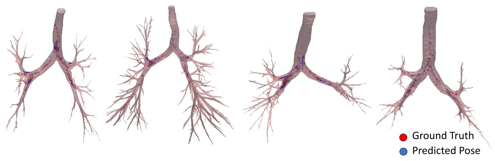

Structure
An anchor graph derived from preoperative CT provides dense anatomical priors for coarse-to-fine localization.
ACM Multimedia 2026 Rio de Janeiro
Fusing preoperative airway geometry with intraoperative video for accurate, stable, and real-time 6-DoF bronchoscope localization.
Chinese Academy of Sciences · Sun Yat-sen University

Research trajectory
Our bronchoscope localization research has progressed from probabilistic tracking to foundation models, vision-language reasoning, and finally dense geometry-aware localization. Each generation addresses a different barrier to accurate, robust, and real-time navigation.

Particle filtering combines motion, anatomy, and geometry for robust real-time tracking.
Read paper v2 · MICCAI 2025Endoscopic foundation models and automatic re-initialization improve generalization and recovery.
Read paper v3 · 2026Vision-language semantics initialize geometric registration in the correct airway branch.
Read paper v4 · ACM MM 2026Dense multi-scale geometry enables accurate, stable, and real-time 6-DoF localization.
Read paperWhy geometry matters
Camera localization in bronchoscopy is challenged by repetitive anatomy, limited texture, and strict latency requirements. GABL injects explicit geometric supervision at the structural, temporal, and appearance levels, combining preoperative CT priors with intraoperative observations in a unified localization framework.
An anchor graph derived from preoperative CT provides dense anatomical priors for coarse-to-fine localization.
A causal Transformer models temporal dynamics to stabilize predictions and reduce trajectory drift.
RGB-depth matching aligns intraoperative observations with rendered geometry in a shared representation space.
Framework

Inside GABL
GABL encodes intraoperative temporal context, organizes patient-specific airway geometry, and dynamically combines global detection with local tracking to produce a robust 6-DoF trajectory.
A causal Transformer fuses the current frame with historical RGB, pose, and depth embeddings. Random history dropout during training improves robustness while the lower-triangular mask preserves online inference.

Preoperative CT is converted into an airway mesh, centerline, and anchor tree. A graph encoder captures global topology, while pose and depth encoders preserve fine local geometry.

Coarse-to-fine anchor localization supplies an absolute pose, RGB-depth matching verifies geometric consistency, and temporal tracking provides smooth incremental updates between frames.

Ablation studies
We isolate the contribution of each localization component, compare temporal data augmentation strategies, and identify the history dropout rate that best balances accuracy and robustness.
Removing any module degrades the complete system.
| Setting | ATEtrans ↓ | ATErot ↓ | SR-5 ↑ | SR-10 ↑ |
|---|---|---|---|---|
| w/o GCN | 10.67 | 31.48 | 57.59 | 78.55 |
| w/o Pose Regressor | 9.31 | 107.54 | 41.09 | 77.09 |
| w/o Pose Tracker | 16.48 | 38.43 | 53.57 | 82.60 |
| w/o Matcher | 7.63 | 30.86 | 58.09 | 82.66 |
| Full Model | 7.01 | 29.56 | 61.04 | 83.66 |
Skip and reverse augmentation are complementary.
| Skip | Reverse | ATEtrans ↓ | ATErot ↓ | SR-5 ↑ | SR-10 ↑ |
|---|---|---|---|---|---|
| – | – | 7.97 | 31.71 | 54.75 | 80.72 |
| ✓ | – | 7.84 | 32.24 | 58.02 | 82.08 |
| – | ✓ | 7.71 | 33.56 | 59.65 | 81.52 |
| ✓ | ✓ | 7.01 | 29.56 | 61.04 | 83.66 |
A 0.75 dropout rate gives the strongest overall result.
| Dropout rate | ATEtrans ↓ | ATErot ↓ | SR-5 ↑ | SR-10 ↑ |
|---|---|---|---|---|
| 0.25 | 8.04 | 31.51 | 57.94 | 83.12 |
| 0.50 | 7.59 | 30.76 | 58.27 | 82.74 |
| 0.75 | 7.01 | 29.56 | 61.04 | 83.66 |
| 1.0 | 7.94 | 31.25 | 58.57 | 82.48 |
Results
7.01mm
Translation ATE
8.37% lower
29.56deg
Rotation ATE
31.76% lower
61.04%
SR-5
Best reported
33.6FPS
Inference speed
Real-time
Localization in action
The rendered view follows the intraoperative video while the global panel tracks the predicted bronchoscope position inside the airway.

Qualitative localization

Citation
@inproceedings{chen2026gabl,
title = {Geometry-Aware Camera Localization for Bronchoscopy},
author = {Chen, Lumin and Tian, Qingyao and Li, Jinpeng and
Jiang, Haoyu and Liao, Huai and Huang, Xinyan and
Liu, Hongbin and Yi, Dong},
booktitle = {Proceedings of the 34th ACM International Conference
on Multimedia},
year = {2026},
doi = {10.1145/3767308.3835259}
}